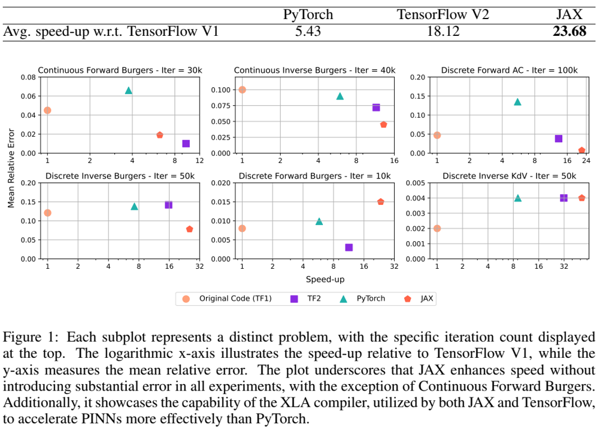
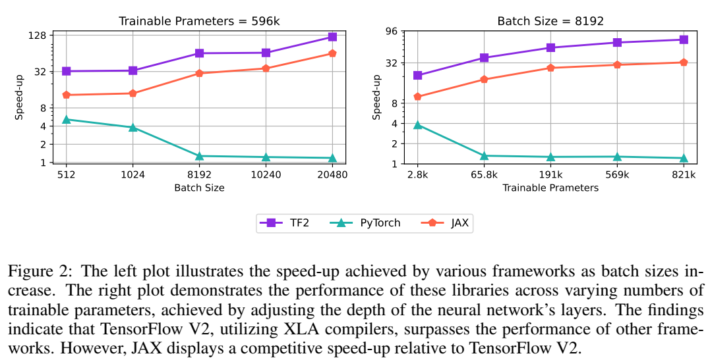

论文阅读二十七：PINNs跨框架比较：JAX、TENSORFLOW和PYTORCH
摘要
物理信息神经网络（PINNs，Physics-Informed Neural Networks）已经成为用于遵循物理定律并解决非线性偏微分方程（PDEs）的关键技术。提高PINN实现的性能可以显著加快模拟的速度，并促进创新方法的创建。本文介绍了“PINNs-JAX”，这是一个创新的实现，它利用JAX框架来利用XLA编译器的独特功能。这种方法旨在提高PINN应用程序中的计算效率和灵活性。我们对PINN-JAX与TensorFlow V1、TensorFlow V2和PyTorch等广泛使用的框架中的传统PINN实现进行了全面比较，评估了六个不同示例的性能。这些问题包括连续问题、离散问题、正问题和逆问题。我们的研究结果表明，用JAX实现的PINN在更简单的例子中表现更好，但TensorFlow V2在应对大规模挑战方面具有潜在的优势，正如3D Navier-Stokes案例所示。为了支持协作开发和进一步研究，我们已将源代码公开于： https://github.com/rezaakb/pinns-jax 。
引言
基于物理的神经网络（PINN）正在成为一种强大的监督学习方法，可确保方案符合物理定律，特别是非线性偏微分方程（PDE）（Raissi等人，2019），并已应用于各个领域（Haghighat等人，2021；Rasht Behesht等人，2021，Mohammadian等人，2022）。
本文介绍PINNs-JAX，基于JAX框架的新的软件包，JAX闻名于其Python函数到XLA优化核（Bradbury等，2018）的即时编译。我们的研究对JAX与其他框架进行了彻底的比较，以确定实现PINNs的最合适平台。我们将PINNsJAX的性能和功能与TensorFlow V1、TensorFlow V2中的PINNs-TF2（Bafghi和Raissi，2023a）和PyTorch中的PINNs-Torch（Bafghi&Raissi，2023b）进行了比较。该评估旨在为研究人员提供全面的比较，以指导他们为特定应用选择最佳框架。
在物理信息神经网络（PINNs）先前JAX实现的基础上（Stanziola et al.，2021；Wang et al.，2023；Sung et al.，2022），并从以前的包中吸取经验教训（McClenny et al.，21；Hennigh et al.，2020；Lu et al.，2019），PINNs-JAX利用XLA和JIT编译器进行高性能数值计算和静态计算图的构建，旨在提高PINNs的计算效率。我们的软件包通过六个示例进行了演示，展示了与TensorFlow V1实现相比的显著速度改进以及跨各种框架的性能。此外，将我们的方法应用于大规模的现实世界问题，揭示了批量大小和可训练参数的数量如何影响包的性能，这表明TensorFlow V2可能是应对大规模挑战的首选。
PINNs-JAX软件包
在本节中，我们简要概述了PINN中使用的问题设置，并通过详细说明软件包的工作流程和在JAX中使用XLA编译器概述了软件包的功能。
问题设置
我们采用来自（Raissi等，2019）的问题框架，侧重于形如以下的参数化和非线性PDEs：
其中， 是域 内寻求的解，且 是由参数 决定的非线性算子。该研究探索两个主要挑战：前向问题，涉及对于给定 推断系统的隐藏状态 （Wang等，2022；Raissi等，2016），和逆向问题，侧重于识别最匹配观测数据的参数 （Raissi等，2017；Raissi& Karniadakis，2017；Rudy等，2016）。研究为连续和离散时间模型开发了算法，为前者（前向问题）使用新的的近似器，Runge-Kutta方法用于后者（逆向问题），详见（Raissi等，2019）。
实验
PINNs-JAX工作流 我们的软件包增强了（Bafghi&Raissi，2023b）中的PINN框架，使用Hydra（配置复杂应用程序的框架）（Yadan，2019）解决PDE相关的正演和逆问题，增加了对新边界条件的支持，如二维空间中的入口、出口、上壁和下壁，以及预测保存等功能。总之，它处理配置文件以设置域、采样和神经网络配置。过程涉及读取用户定义的PDEs和配置、编译条件和使用XLA编译器捕捉计算图以进行高校训练。对于优化，我们使用Optax，一个灵活的JAX梯度处理和优化库，由（DeepMind等，2020）开发。
XLA编译器 JAX 系统作为即时编译器（JIT）运行，为纯粹和静态组成的子程序生成代码–也就是说，如果一个函数没有副作用，它就是纯粹的；如果一个函数可以表示为基于一组原始函数的静态数据依赖图，它就是静态组成的。它通过与XLA编译器基础设施相结合的高级跟踪来实现这一点（Demeure等人，2023）。JAX建立在Autograd使用的跟踪库之上（Maclaurin，2016），该库专为自闭合而设计，因此将其操作识别为基元。此外，JAX将Numpy的数值函数（van der Walt等人，2011）作为其原语的一部分，使其能够为使用Numpy语法的Python函数生成代码。这包括支持任意顺序正向和反向模式自动微分（Frostig等人，2018）。
实验
本节中，我们探索设计用于评估PINNs-JAX在不同场景中的实验，尤其侧重于批量大小的变化如何影响其效率。此外，我们将其性能与TensorFlow和PyTorch等其他流行框架进行了比较，旨在确定实现PINNs的最有效方法。在这些实验中，Adam优化器被专门使用。
硬件设置 所有实验都是使用单一NVIDIA Quadro RTX 8000 GPU执行，以保证一致性并促进可重复性。
加速指标 按照（Bafghi & Raissi，2023a;b），我们为不同的场景计算中值迭代时间，并将其与原始TensorFlow V1(TF1)实现进行比较。加速指标通过TF1时间除每个场景中的时间来衡量。

框架 我们的实验利用如（Bafghi & Raissi，2023a;b）中TensorFlow V2 和 PyTorch的最优配置。具体地，TensorFlow V2 模型使用XLA编译器（Sabne，2020），而PyTorch模型使用CUDA图（Ramarao，2022）和TorchScript（DeVito，2022）来增强性能。此外，TensorFlow V1不利用任何加速技术，且采用来自引用工作中的原始设置。我们排除了使用混合精度的配置和不使用JIT编译器的配置，因为它们在PINN中的性能较差（Bafghi&Raissi，2023a；b）。
各种框架的评估
我们在跨各种场景中评估了多个框架的性能，包括离散前向Allen-Cahn(AC)方程，和离散逆向Korteweg-dev Vries(KdV)方程。此外，我们在所有配置中探索了Burgers方程：连续、离散、前向和逆向。每个示例应用静态批量。对于示例详细的见解，参见（Bafghi & Raissi，202a；Raissi的，2019）。我们的评估覆盖TensorFlow V2 、PyTorch和JAX，将它们与TensorFlow V1中的基准进行比较。
图1展示了使用JAX和TensorFLow V2带来显著的速度增强，相比于TensorFlow V1和PyTorch，当使用单一GPU时，在不影响精度的情况。记录的最显著的加速是51.94，在KdV示例中实现。这种性能提升可能归因于JAX的函数式编程特性，消除了计算二阶导数的需要，并允许直接计算输出的三阶导数。尽管在大多数情况下，JAX的表现优于TensorFlow V2，但在Continuous Forward Burgers示例中观察到的TensorFlow V2的加速率较低，这突显了批量大小的影响，这是下一节将探讨的主题。表1显示了与TensorFlow V2和PyTorch相比，我们实现的示例的平均速度提升，显示JAX在上述示例中平均实现了23.68的速度提升。
评估批量大小和可训练参数数量的影响
在本小节中，我们分析了批量大小变化和可训练参数数量对不同框架模型效率的影响。我们的研究集中在使用由3D Navier-Stokes方程控制的真实颅内动脉瘤（ICA）模型模拟三维生理血流。该数据集包含2900万个数据点，跨越五个不同解决方案的空间和时间域，在每次迭代中采用动态批处理和随机采样。有关该示例的更多信息，请参阅（Raissi等人，2018；2020）。
我们评估了各种配置的加速指标，首先只修改批量大小，同时在具有596k个可训练参数的模型中保持所有其他因素不变。图2中的左图表明，虽然JAX的性能随着批处理大小的增加而提高，但它始终低于TensorFlow V2，这表明TensorFlow V2在管理大规模问题方面具有卓越的能力。TensorFlow V2和JAX相对于PyTorch的这种增强性能可归因于XLA编译器能够优化计算图中的内存使用，例如通过运算融合，从而适应更大的批处理大小。在随后的实验中，在8192的固定批量下，我们通过改变神经网络层的深度来改变可训练参数的数量。在这里，虽然PyTorch的性能普遍下降，但XLA编译的效率却有所提高，如图2的右图所示。这一讨论强调了XLA编译器的优势，特别是对于涉及大批量和大量可训练参数的场景，并表明TensorFlow V2是更适合大规模计算任务的库。

结论和限制
在这项研究中，我们研究了各种库（包括PyTorch、TensorFlow和JAX）中物理知情神经网络（PINN）的性能。我们证明，在TensorFlow和JAX中使用XLA编译器显著提高了速度，突出了编译器在提高标准TensorFlow V1实现之外的效率方面的关键作用。对六个示例的评估表明，与TensorFlow V2和PyTorch相比，JAX的平均速度提高了23.68。然而，TensorFlow在大批量和更多参数的情况下表现出卓越的性能。此外，通过将PINN应用于一系列问题，我们展示了PINN-JAX包对各种科学挑战的适应性。此外，我们的研究结果表明，库和计算策略的选择对于优化特定应用的PINN至关重要，这加强了对其实现的细致方法的需求。本文旨在为跨不同库实施PINN的研究人员和从业者提供宝贵的资源，指导他们根据自己的计算需求选择合适的工具和技术。